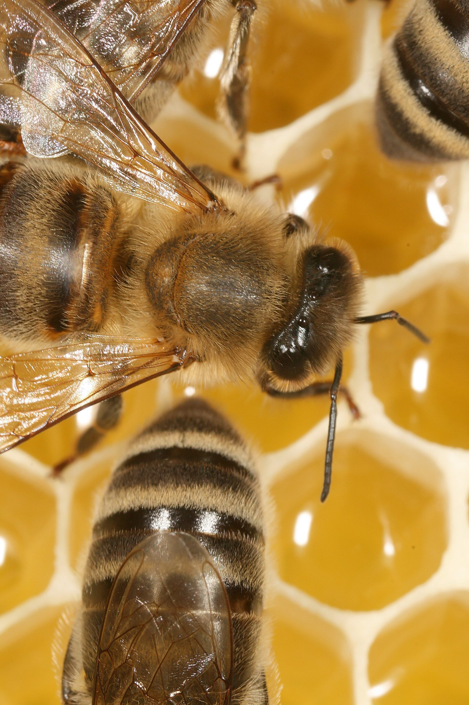
Busy Bees Build a Hive
A Honey Bee Team Story

A Honey Bee Team Story
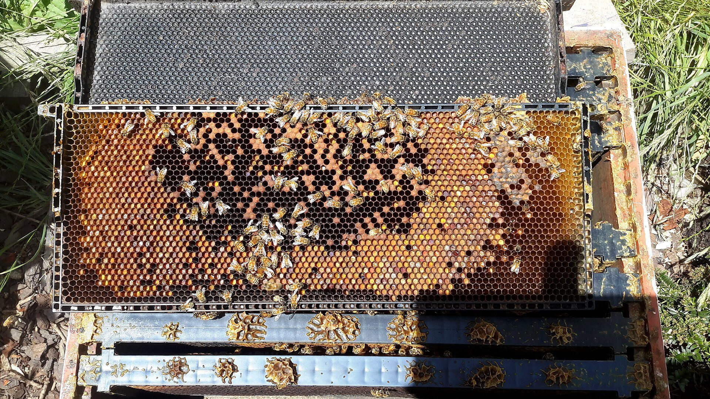
Step inside a honey bee hive. Buzz, buzz! Many bees live here together as one busy family.
Inside the hive, bees have different jobs. The queen is usually the mother of the hive. Worker bees do most of the hive work.
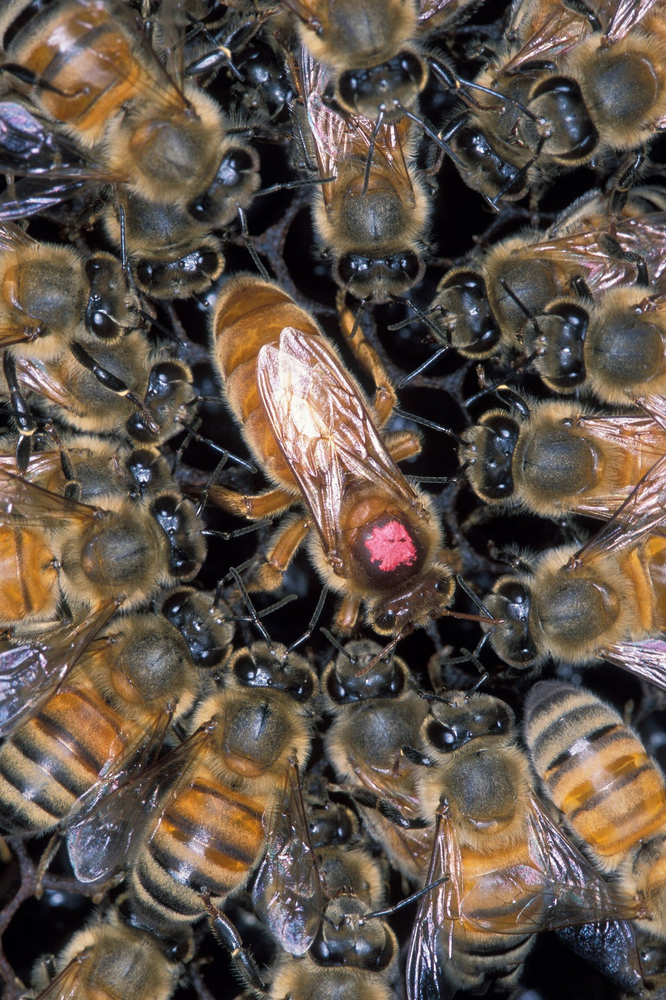
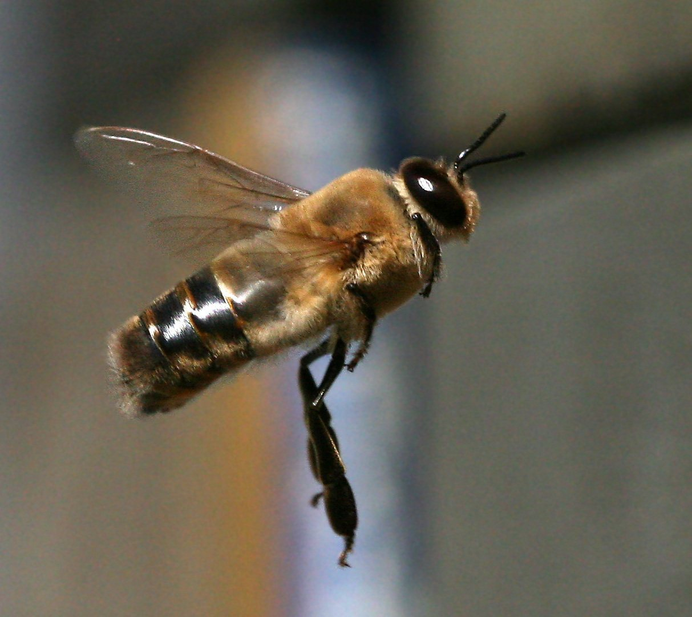
Some bees are drones. Drones are male honey bees. They have big eyes, but they do not collect nectar or pollen.
Worker bees build with wax from their own bodies. They warm the wax and shape it into tiny rooms called cells.
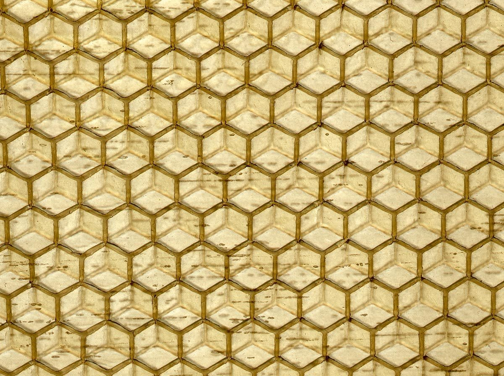
Look closely at the honeycomb. Many cells have six sides. Six-sided cells fit together neatly, side by side.
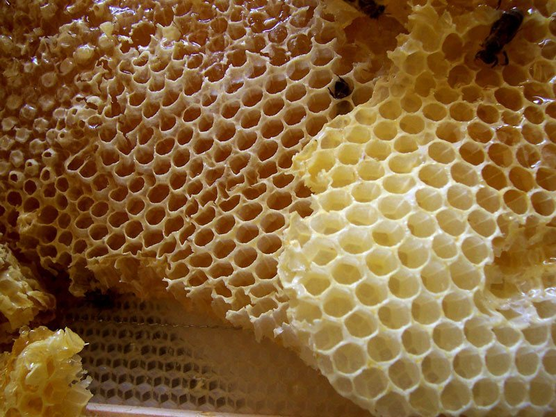
Out in the flowers, worker bees sip sweet nectar. A bee uses a long tongue to lap it up.
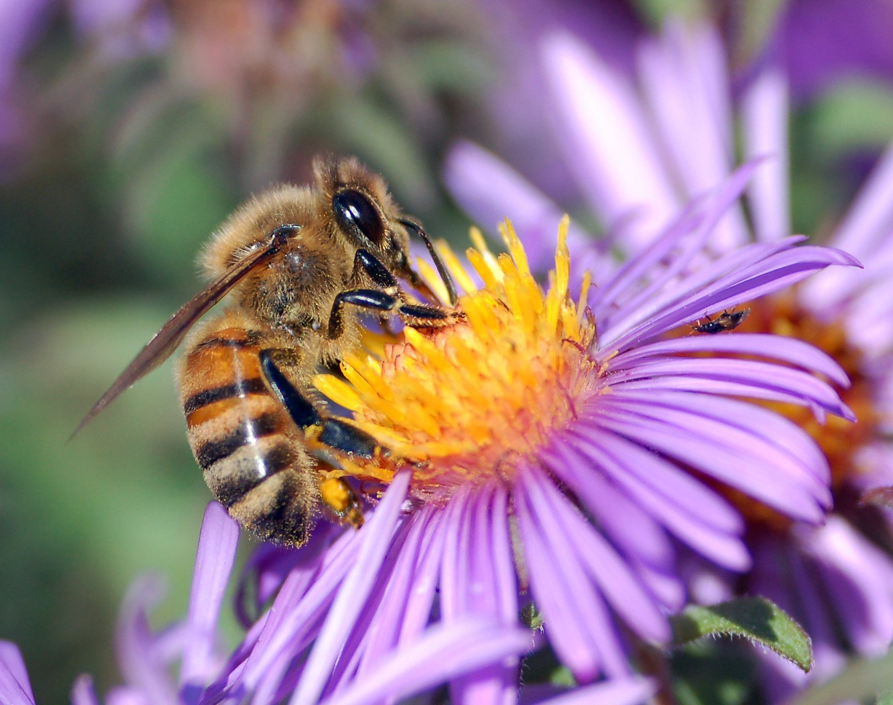
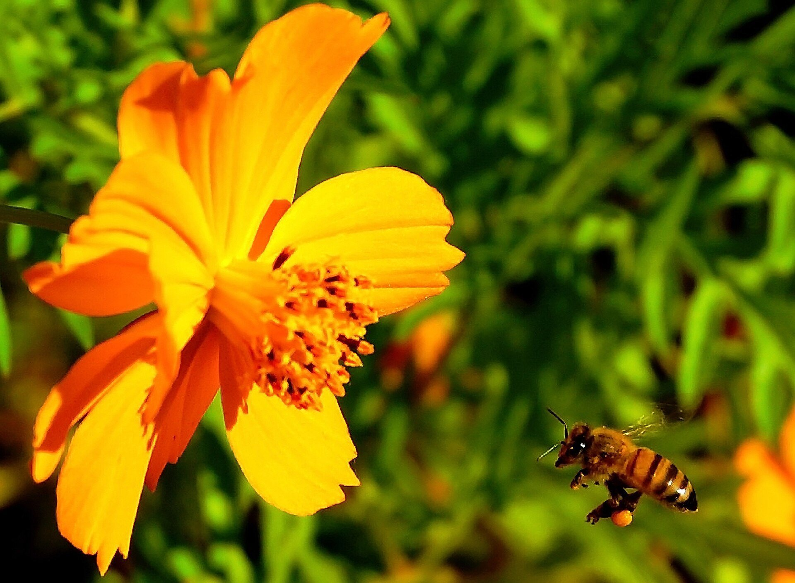
Bees also carry pollen on their back legs. As they visit flowers, pollen can help flowers make seeds.
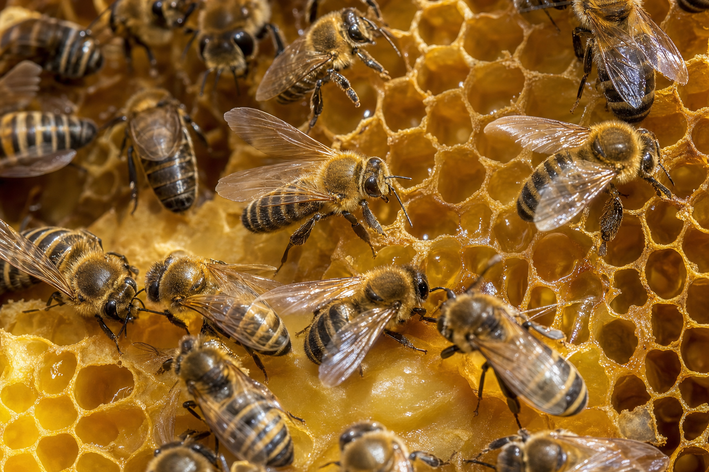
Back at the hive, workers pass nectar from bee to bee. They fan their wings until watery nectar becomes thick honey.
When the honey is ready, bees seal the cell with a wax cap. Honey is food for times when flowers are hard to find.
Honeycomb cells can hold baby bees too. Worker bees feed and care for the young bees as they grow.
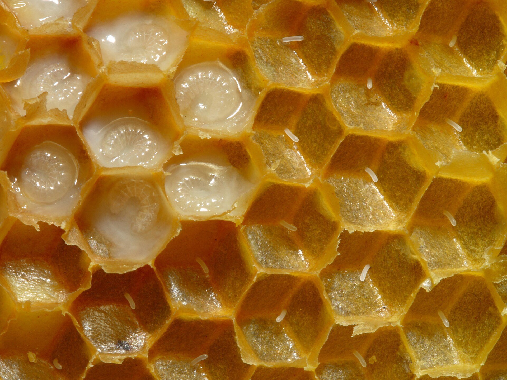
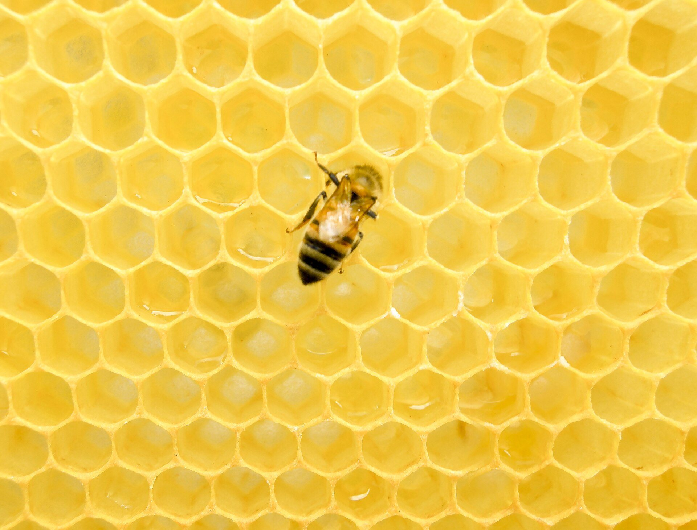
A hive stays busy all day. Young workers clean and feed babies. Older workers guard, forage, and help move air through the hive.
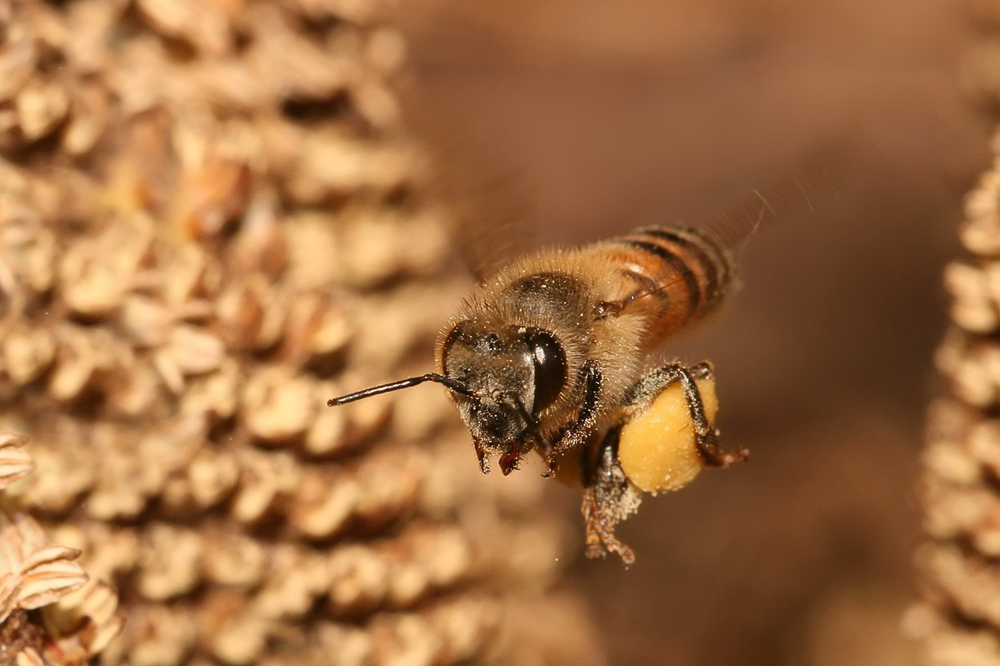
When one bee finds good food, she can waggle dance. Her dance tells other bees where to fly. A hive is one big living team!